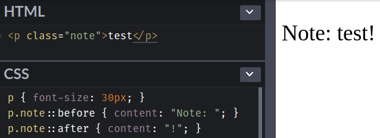
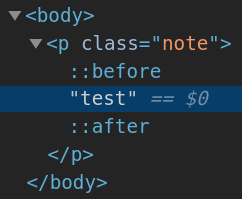

<!DOCTYPE html><html><head><meta name="generator" content="Hexo 3.9.0"><meta charset="utf-8"><title>重新認識 CSS - Pseudo-element (偽元素) | Titangene Blog</title><meta name="description" content="利用 blog 紀錄學習歷程"><meta http-equiv="X-UA-Compatible" content="IE=edge"><meta name="viewport" content="width=device-width,initial-scale=1,maximum-scale=1"><meta name="HandheldFriendly" content="True"><meta name="apple-mobile-web-app-capable" content="yes"><meta name="author" content="Titangene"><link rel="shortcut icon" href="/favicon.ico"><link rel="alternate" href="/atom.xml" title="Titangene Blog"><meta name="description" content="Selector (選擇器) 可用來選擇 HTML 和 XML 文件中的節點，並將樣式屬性綁定到文件 (HTML 和 XML) 中的元素上。當選擇器與某元素 match 的時候，就可以對選到的元素進行 CSS 樣式設定。本篇會介紹 pseudo-element (偽元素)，包括 ::before 和 ::after。"><meta name="keywords" content="IT 鐵人賽"><meta property="og:type" content="article"><meta property="og:title" content="重新認識 CSS - Pseudo-element (偽元素)"><meta property="og:url" content="https://titangene.github.io/article/css-selector-pseudo-element.html"><meta property="og:site_name" content="Titangene Blog"><meta property="og:description" content="Selector (選擇器) 可用來選擇 HTML 和 XML 文件中的節點，並將樣式屬性綁定到文件 (HTML 和 XML) 中的元素上。當選擇器與某元素 match 的時候，就可以對選到的元素進行 CSS 樣式設定。本篇會介紹 pseudo-element (偽元素)，包括 ::before 和 ::after。"><meta property="og:locale" content="zh-tw"><meta property="og:image" content="https://titangene.github.io/images/cover/css.png"><meta property="og:updated_time" content="2019-10-15T06:54:56.874Z"><meta name="twitter:card" content="summary_large_image"><meta name="twitter:title" content="重新認識 CSS - Pseudo-element (偽元素)"><meta name="twitter:description" content="Selector (選擇器) 可用來選擇 HTML 和 XML 文件中的節點，並將樣式屬性綁定到文件 (HTML 和 XML) 中的元素上。當選擇器與某元素 match 的時候，就可以對選到的元素進行 CSS 樣式設定。本篇會介紹 pseudo-element (偽元素)，包括 ::before 和 ::after。"><meta name="twitter:image" content="https://titangene.github.io/images/cover/css.png"><meta name="twitter:creator" content="@titangeneTW"><meta name="twitter:site" content="@titangene_blog"><meta property="fb:admins" content="100001106016019"><meta property="fb:app_id" content="2470546159839111"><meta property="og:image:width" content="1200"><meta property="og:image:height" content="630"><meta name="google-site-verification" content="AaJ39L7h-nWwJjXJMhAMtXSF6H6BUgGWXC80kYvLic8"><link rel="stylesheet" href="//fonts.googleapis.com/css?family=Inconsolata|Titillium+Web"><link href="https://fonts.googleapis.com/css?family=Source+Code+Pro&display=swap" rel="stylesheet"><link rel="stylesheet" href="//use.fontawesome.com/releases/v5.7.0/css/all.css" integrity="sha384-lZN37f5QGtY3VHgisS14W3ExzMWZxybE1SJSEsQp9S+oqd12jhcu+A56Ebc1zFSJ" crossorigin="anonymous"><link rel="stylesheet" href="/style.css"><script async src="https://www.googletagmanager.com/gtag/js?id=UA-129758206-1"></script><script>!function(a){function n(){dataLayer.push(arguments)}a.dataLayer=a.dataLayer||[],n("js",new Date),n("config","UA-129758206-1")}(window)</script><script>function setLoadingBarProgress(e){document.getElementById("loading-bar").style.width=e+"%"}</script></head></html><body><div id="loading-bar-wrapper"><div id="loading-bar"></div></div><script>setLoadingBarProgress(20)</script><header class="l_header"><div class="wrapper"><div class="nav-main container container--flex"><a class="logo flat-box" href="/">Titangene Blog</a><div class="menu"><ul class="h-list"><li><a class="flat-box nav-home" href="/">Home</a></li><li><a class="flat-box nav-archives" href="/archives">Archives</a></li></ul><div class="underline"></div></div><div class="m_search"><form name="searchform" class="form u-search-form"><input type="text" class="input u-search-input" placeholder="Search"> <i class="fas fa-search"></i></form></div><ul class="switcher h-list"><li class="s-search"><a class="fas fa-search" href="javascript:void(0)"></a></li><li class="s-menu"><a class="fas fa-bars" href="javascript:void(0)"></a></li></ul></div><div class="nav-sub container container--flex"><a class="logo flat-box" href="/">Titangene Blog</a><ul class="switcher h-list"><li class="s-comment"><a class="far fa-comment-alt" href="javascript:void(0)"></a></li><li class="s-top"><a class="fas fa-arrow-up" href="javascript:void(0)"></a></li><li class="s-toc"><a class="fas fa-list-ol" href="javascript:void(0)"></a></li></ul></div></div></header><aside class="menu-phone"><nav><a href="/" class="nav-home nav">Home </a><a href="/archives" class="nav-archives nav">Archives</a></nav></aside><script>setLoadingBarProgress(40)</script><div class="l_body"><div class="container clearfix"><div class="l_main"><article id="post-css-selector-pseudo-element" class="post white-box article-type-post" itemscope itemprop="blogPost"><section class="meta"><h2 class="title"><a href="/article/css-selector-pseudo-element.html">重新認識 CSS - Pseudo-element (偽元素)</a></h2><span class="post-time"><span class="post-meta-item-icon"><i class="fa fa-calendar"></i> </span><span class="post-meta-item-text">發表於</span> <time title="建立時間：2019-09-21 19:50:42" itemprop="dateCreated datePublished" datetime="2019-09-21T19:50:42+08:00">2019-09-21 </time><span class="post-meta-divider">|</span> <span class="post-meta-item-icon"><i class="fa fa-calendar-check"></i> </span><span class="post-meta-item-text">更新於</span> <time title="修改時間：2019-10-15 14:54:56" itemprop="dateModified" datetime="2019-10-15T14:54:56+08:00">2019-10-15</time></span> <span class="comments-count"><span class="post-meta-divider">|</span> <span class="post-meta-item-icon"><i class="fas fa-comment"></i> </span><a href="https://titangene.github.io/article/css-selector-pseudo-element.html#disqus_thread" class="article-comment-count" data-disqus-identifier="article/css-selector-pseudo-element.html" itemprop="discussionUrl"></a></span><div class="post-category"><span class="post-meta-item-icon"><i class="fa fa-folder"></i> </span><span class="post-meta-item-text">分類於</span> <span itemprop="about" itemscope itemtype="http://schema.org/Thing"><a href="/categories/css/" itemprop="url" rel="index"><span itemprop="name">CSS</span></a></span></div></section><section class="toc-wrapper"><ol class="toc"><li class="toc-item toc-level-2"><a class="toc-link" href="#前言"><span class="toc-text">前言</span></a></li><li class="toc-item toc-level-2"><a class="toc-link" href="#Pseudo-elements"><span class="toc-text">Pseudo-elements</span></a><ol class="toc-child"><li class="toc-item toc-level-3"><a class="toc-link" href="#originating-原始-元素是什麼？"><span class="toc-text">originating (原始) 元素是什麼？</span></a></li><li class="toc-item toc-level-3"><a class="toc-link" href="#Generated-Content-Pseudo-elements-before-and-after"><span class="toc-text">Generated Content Pseudo-elements: ::before and ::after</span></a><ol class="toc-child"><li class="toc-item toc-level-4"><a class="toc-link" href="#content-字串換行"><span class="toc-text">content 字串換行</span></a></li></ol></li></ol></li><li class="toc-item toc-level-2"><a class="toc-link" href="#最後"><span class="toc-text">最後</span></a></li></ol></section><section class="article typo"><div class="article-entry" itemprop="articleBody"><p></p><p>Selector (選擇器) 可用來選擇 HTML 和 XML 文件中的節點，並將樣式屬性綁定到文件 (HTML 和 XML) 中的元素上。當選擇器與某元素 match 的時候，就可以對選到的元素進行 CSS 樣式設定。本篇會介紹 pseudo-element (偽元素)，包括 <code>::before</code> 和 <code>::after</code>。</p><a id="more"></a><h2 id="前言"><a class="header-anchor" href="#前言"></a>前言</h2><blockquote><p>「重新認識 CSS」這個系列名稱的由來就如其名，我想要重新認識它。雖然以前就有學過 CSS，但這次想從 CSS Spec 中學到最原始的定義和內容，更加了解 CSS 的原理，讓我在切版的時候可以更加確定自己在做什麼，我踩到的雷只是因為我不夠了解它才會炸開。</p><p>在這 30 天的內容中，會將 Spec 內看到的資料整理成這個系列，也希望正在學 CSS 的各位可以更加了解它。另外我也會同時將文章發至我的 Blog，如果想直接看文內的程式碼 Demo 畫面，可以到我的 Blog 來看 😃。</p><p>本文同步發表於 iT 邦幫忙：<a href="https://ithelp.ithome.com.tw/articles/10218712" target="_blank" rel="noopener">重新認識 CSS - Pseudo-element (偽元素)</a></p><p>「重新認識 CSS」系列文章發文於：</p><ul><li><a href="https://ithelp.ithome.com.tw/users/20117586/ironman/2617" target="_blank" rel="noopener">iT 邦幫忙</a></li><li><a href="https://titangene.github.io/tags/it-%E9%90%B5%E4%BA%BA%E8%B3%BD/">Titangene Blog</a></li></ul></blockquote><h2 id="Pseudo-elements"><a class="header-anchor" href="#Pseudo-elements"></a>Pseudo-elements</h2><p>pseudo-element 代表不直接存在於 document tree 中的元素。</p><p>document language (文件語言) 不提供存取元素內容的第一個字母或第一行的機制，但是可以用 <code>::first-letter</code> 和 <code>::first-line</code> 這兩個 pseudo-element 選到，這樣就可以對這些元素設定樣式。</p><p>另外，pseudo-element 還可以表示原始文件 (source document) 中根本不存在的內容，例如 <code>::before</code> 和 <code>::after</code> 這兩個 pseudo-element 可以在任何元素的內容之前或之後插入其他內容。</p><p>pseudo-class 和 pseudo-element 都不會出現在 document source 或 document tree 中，或是不會對其進行修改。所以，pseudo-class 和 pseudo-element 都不會影響到 <a href="https://titangene.github.io/article/css-selector-pseudo-class-2.html">structural pseudo-class</a> 或與它們的 <a href="https://www.w3.org/TR/selectors-4/#originating-element" target="_blank" rel="noopener">originating (原始) 元素</a> 或其 tree 有關的其他 selector 的解譯 (interpretation)。</p><blockquote><p>Structural pseudo-class 詳情可參考我前幾天寫的「<a href="https://titangene.github.io/article/css-selector-pseudo-class-2.html">重新認識 CSS - Pseudo-class (偽類) (2)</a>」。</p></blockquote><div class="info"><h3 id="originating-原始-元素是什麼？"><a class="header-anchor" href="#originating-原始-元素是什麼？"></a>originating (原始) 元素是什麼？</h3><p>pseudo-element 綁定到頁面上的某個元素，而此元素就稱為 originating 元素。例如：</p><figure class="highlight css"><table><tr><td class="gutter"><pre><span class="line">1</span><br></pre></td><td class="code"><pre><code class="hljs css"><span class="hljs-selector-tag">div</span> <span class="hljs-selector-tag">a</span><span class="hljs-selector-pseudo">::before</span> &#123; <span class="hljs-attribute">content</span>: <span class="hljs-string">'Hi '</span>; &#125;<br></code></pre></td></tr></table></figure><p>在 selector <code>div a::before</code> 中，與 selector match 的 <code>a</code> 元素就是 originating 元素。</p></div><p>如果想更了解 pseudo-element，可以看它在以下這些 CSS Spec 的定義：</p><ul><li><a href="https://www.w3.org/TR/CSS2/selector.html" target="_blank" rel="noopener">CSS 2.1</a></li><li><a href="https://www.w3.org/TR/selectors-3/#pseudo-elements" target="_blank" rel="noopener">Selectors Level 3</a></li><li><a href="https://www.w3.org/TR/css-pseudo-4/" target="_blank" rel="noopener">CSS Pseudo-Elements Module Level 4</a></li></ul><h3 id="Generated-Content-Pseudo-elements-before-and-after"><a class="header-anchor" href="#Generated-Content-Pseudo-elements-before-and-after"></a>Generated Content Pseudo-elements: <code>::before</code> and <code>::after</code></h3><ul><li><code>::before</code>：在 originating 元素的內容之前建立的 child pseudo-element</li><li><code>::after</code>：在 originating 元素的內容之後建立的 child pseudo-element</li></ul><p><code>::before</code> 和 <code>::after</code> 的 CSS <a href="https://www.w3.org/TR/css-content-3/#propdef-content" target="_blank" rel="noopener"><code>content</code></a> 屬性的<a href="https://www.w3.org/TR/css-cascade/#initial-values" target="_blank" rel="noopener">初始值</a>為 <a href="https://www.w3.org/TR/css-content-3/#valdef-content-normal" target="_blank" rel="noopener"><code>normal</code></a>，<a href="https://www.w3.org/TR/css-cascade/#computed" target="_blank" rel="noopener">計算值</a>為 <a href="https://www.w3.org/TR/css-content-3/#valdef-content-none" target="_blank" rel="noopener"><code>none</code></a>。</p><p>當 <code>::before</code> 和 <code>::after</code> 的計算 <a href="https://www.w3.org/TR/css-content-3/#propdef-content" target="_blank" rel="noopener"><code>content</code></a> 值不為 <a href="https://www.w3.org/TR/css-content-3/#valdef-content-none" target="_blank" rel="noopener"><code>none</code></a> 時，這些 pseudo-element 就會產生 box，就好像它們是其 <a href="https://www.w3.org/TR/selectors-4/#originating-element" target="_blank" rel="noopener">originating (原始) 元素</a>的直接子元素一樣，並且可以像在 document tree 中任何 normal document-sourced (基於文件) 的元素一樣進行樣式設定</p><p>例如：</p><ul><li>在 class 為 <code>note</code> 的 <code>p</code> 元素的內容之前插入字串 &quot;Note: &quot;</li><li>在 class 為 <code>note</code> 的 <code>p</code> 元素的內容之後插入字串 “!”</li></ul><figure class="highlight html"><table><tr><td class="gutter"><pre><span class="line">1</span><br></pre></td><td class="code"><pre><code class="hljs html"><span class="hljs-tag">&lt;<span class="hljs-name">p</span> <span class="hljs-attr">class</span>=<span class="hljs-string">"note"</span>&gt;</span>test<span class="hljs-tag">&lt;/<span class="hljs-name">p</span>&gt;</span><br></code></pre></td></tr></table></figure><figure class="highlight css"><table><tr><td class="gutter"><pre><span class="line">1</span><br><span class="line">2</span><br></pre></td><td class="code"><pre><code class="hljs css"><span class="hljs-selector-tag">p</span><span class="hljs-selector-class">.note</span><span class="hljs-selector-pseudo">::before</span> &#123; <span class="hljs-attribute">content</span>: <span class="hljs-string">"Note: "</span>; &#125;<br><span class="hljs-selector-tag">p</span><span class="hljs-selector-class">.note</span><span class="hljs-selector-pseudo">::after</span> &#123; <span class="hljs-attribute">content</span>: <span class="hljs-string">"!"</span>; &#125;<br></code></pre></td></tr></table></figure><p>Demo：<a href="https://codepen.io/titangene/pen/QWLzNjE" target="_blank" rel="noopener">Codepen 連結</a></p><p><code>::before</code> 和 <code>::after</code> 的 <code>display</code> 的初始值為 <code>inline</code>，所以會生成 inline box。與 <code>p</code> 元素的其他 inline children 一樣，它會參與 <code>p</code> 元素的 <a href="https://www.w3.org/TR/CSS22/visuren.html#inline-formatting" target="_blank" rel="noopener">IFC (inline formatting context)</a>，有可能與其他內容共享一行。</p><p>就如下面範例那樣，因為 <code>::before</code> 和 <code>::after</code> 都是 <code>display: inline</code>，並且在 <code>p</code> 元素的內容 <code>test</code> 之前加上 <code>::before</code> 的內容 <code>&quot;Note: &quot;</code>，以及在 <code>test</code> 之後加上 <code>::after</code> 的內容 <code>&quot;！&quot;</code>，所以在畫面上顯示的結果就變成 <code>Note: test!</code>。</p><p></p><p></p><iframe height="202" style="width:100%" scrolling="no" title="Generated Content Pseudo-elements: `::before` and `::after`" src="https://codepen.io/titangene/embed/QWLzNjE?height=202&theme-id=dark&default-tab=css,result" frameborder="no" allowtransparency="true" allowfullscreen>See the Pen <a href="https://codepen.io/titangene/pen/QWLzNjE" target="_blank" rel="noopener">Generated Content Pseudo-elements: `::before` and `::after`</a> by Titangene (<a href="https://codepen.io/titangene" target="_blank" rel="noopener">@titangene</a>) on <a href="https://codepen.io" target="_blank" rel="noopener">CodePen</a>.</iframe><h4 id="content-字串換行"><a class="header-anchor" href="#content-字串換行"></a><code>content</code> 字串換行</h4><p>如果想在 <code>content</code> 屬性內將字串換行要怎麼做？只要在字串中加入 <code>\A</code> 這個 escape sequence (轉義序列)，它就會在 generated content 中包含 newline，而這個插入的 line break 也會受到 <a href="https://www.w3.org/TR/CSS22/text.html#propdef-white-space" target="_blank" rel="noopener"><code>white-space</code></a> 屬性的影響。有關 <code>\A</code> escape sequence 的詳情可參 CSS 2 的 <a href="https://www.w3.org/TR/CSS22/syndata.html#strings" target="_blank" rel="noopener">字串</a> 和 <a href="https://www.w3.org/TR/CSS2/syndata.html#escaped-characters" target="_blank" rel="noopener">字元與大小寫</a> 部份。</p><figure class="highlight css"><table><tr><td class="gutter"><pre><span class="line">1</span><br><span class="line">2</span><br><span class="line">3</span><br><span class="line">4</span><br><span class="line">5</span><br><span class="line">6</span><br></pre></td><td class="code"><pre><code class="hljs css"><span class="hljs-selector-tag">h2</span><span class="hljs-selector-pseudo">:before</span> &#123;<br>  <span class="hljs-attribute">display</span>: block;<br>  <span class="hljs-attribute">text-align</span>: center;<br>  <span class="hljs-attribute">white-space</span>: pre;<br>  <span class="hljs-attribute">content</span>: <span class="hljs-string">"Hello\A Titan"</span><br>&#125;<br></code></pre></td></tr></table></figure><h2 id="最後"><a class="header-anchor" href="#最後"></a>最後</h2><p>今天介紹一些 <code>::before</code> 和 <code>::after</code> 這兩個 pseudo-element，接下來幾天會接續介紹其他 selector。</p><p>資料來源：</p><ul><li><a href="https://www.w3.org/TR/CSS22/selector.html" target="_blank" rel="noopener">CSS 2.2 Specification - Selectors</a></li><li><a href="https://www.w3.org/TR/selectors-3/" target="_blank" rel="noopener">Selectors Level 3</a></li><li><a href="https://www.w3.org/TR/selectors-4/" target="_blank" rel="noopener">Selectors Level 4</a></li><li><a href="https://www.w3.org/TR/css-pseudo-4/" target="_blank" rel="noopener">CSS Pseudo-Elements Module Level 4</a></li><li><a href="https://www.w3.org/TR/css-content-3/#propdef-content" target="_blank" rel="noopener">CSS Generated Content Module Level 3</a></li><li><a href="https://www.w3.org/TR/css-cascade-4/" target="_blank" rel="noopener">CSS Cascading and Inheritance Level 4</a></li></ul></div><div class="article-tags tags"><a href="/tags/it-鐵人賽/" title="IT 鐵人賽">IT 鐵人賽</a></div></section><div class="article-share-links"><span>分享：</span> <a class="fab fa-facebook-f" title="Facebook" target="_blank" href="javascript:window.open('https://www.facebook.com/sharer.php?u=https%3A%2F%2Ftitangene.github.io%2Farticle%2Fcss-selector-pseudo-element.html', 'Share on Facebook','width=600, height=600')"></a> <a class="fab fa-twitter" title="Twitter" target="_blank" href="javascript:window.open('https://twitter.com/share?url=https%3A%2F%2Ftitangene.github.io%2Farticle%2Fcss-selector-pseudo-element.html&amp;text=重新認識 CSS - Pseudo-element (偽元素)&amp;hashtags=IT鐵人賽&amp;via=titangene_blog', 'Share on Twitter','width=600, height=260')"></a> <a class="fab fa-linkedin-in" title="Linkedin" target="_blank" href="javascript:window.open('https://www.linkedin.com/shareArticle?mini=true&amp;url=https%3A%2F%2Ftitangene.github.io%2Farticle%2Fcss-selector-pseudo-element.html&amp;title=重新認識 CSS - Pseudo-element (偽元素)', 'Share on Linkedin','width=600, height=600')"></a> <a class="fab fa-facebook-messenger" title="Facebook Messenger" target="_blank" href="javascript:window.open('http://www.facebook.com/dialog/send?app_id=2470546159839111&amp;link=https%3A%2F%2Ftitangene.github.io%2Farticle%2Fcss-selector-pseudo-element.html&amp;display=popup&amp;redirect_uri=https%3A%2F%2Fwww.facebook.com%2Fdialog%2Freturn%2Fclose%23_%3D_', 'Send in Messenger','width=600, height=600')"></a> <a class="fab fa-telegram-plane" href="https://telegram.me/share/url?url=https%3A%2F%2Ftitangene.github.io%2Farticle%2Fcss-selector-pseudo-element.html&text=重新認識 CSS - Pseudo-element (偽元素)" target="_blank"></a></div><nav id="article-nav"><a href="/article/css-selector-pseudo-class-2.html" id="article-nav-prev" class="article-nav-link-wrap" title="重新認識 CSS - Pseudo-class (偽類) (2)" rel="prev"><strong class="article-nav-caption">Prev</strong><p class="article-nav-title">重新認識 CSS - Pseudo-class (偽類) (2)</p><i class="fas fa-angle-left"></i> </a><a href="/article/css-attribute-value.html" id="article-nav-next" class="article-nav-link-wrap" title="重新認識 CSS - CSS 屬性值" rel="next"><strong class="article-nav-caption">Next</strong><p class="article-nav-title">重新認識 CSS - CSS 屬性值</p><i class="fas fa-angle-right"></i></a></nav><section id="list_related_posts"><h2>相關文章</h2><ul class="related-posts"><li class="related-posts-item"><a class="related-posts-link" href="/article/css-visibility.html">重新認識 CSS - visibility</a><div class="related-posts-item-abstract">本篇將介紹 CSS 的 visibility 屬性。前言「重新認識 CSS」這個系列名稱的由來就如其名，我想要重新認識它。雖然以前就有學過 CSS，但這次想從 CSS Spec 中學到最原始的定義和內容，更加了解 CSS</div></li><li class="related-posts-item"><a class="related-posts-link" href="/article/css-containing-block.html">重新認識 CSS - Containing block</a><div class="related-posts-item-abstract">本篇將介紹 CSS 的 Containing block。前言「重新認識 CSS」這個系列名稱的由來就如其名，我想要重新認識它。雖然以前就有學過 CSS，但這次想從 CSS Spec 中學到最原始的定義和內容，更加了解</div></li><li class="related-posts-item"><a class="related-posts-link" href="/article/css-selector-pseudo-class-2.html">重新認識 CSS - Pseudo-class (偽類) (2)</a><div class="related-posts-item-abstract">Selector (選擇器) 可用來選擇 HTML 和 XML 文件中的節點，並將樣式屬性綁定到文件 (HTML 和 XML) 中的元素上。當選擇器與某元素 match 的時候，就可以對選到的元素進行 CSS 樣式設定。</div></li><li class="related-posts-item"><a class="related-posts-link" href="/article/css-media-type.html">重新認識 CSS - media type</a><div class="related-posts-item-abstract">如果同將一份文件應用在不同的 media 上呈現，就可以使用 media type 來指定適用的 media。本篇將介紹 CSS 的 media type。前言「重新認識 CSS」這個系列名稱的由來就如其名，我想要重新認</div></li><li class="related-posts-item"><a class="related-posts-link" href="/article/css-display.html">重新認識 CSS - display</a><div class="related-posts-item-abstract">本篇將介紹 CSS 中的各種 display 屬性值。前言「重新認識 CSS」這個系列名稱的由來就如其名，我想要重新認識它。雖然以前就有學過 CSS，但這次想從 CSS Spec 中學到最原始的定義和內容，更加了解 CS</div></li><li class="related-posts-item"><a class="related-posts-link" href="/article/css-selector-1.html">重新認識 CSS - Simple Selector & Groups of selector</a><div class="related-posts-item-abstract">Selector (選擇器) 可用來選擇 HTML 和 XML 文件中的節點，並將樣式屬性綁定到文件 (HTML 和 XML) 中的元素上。當選擇器與某元素 match 的時候，就可以對選到的元素進行 CSS 樣式設定。</div></li></ul></section><section class="comments" id="comments"><h2>討論區</h2><div id="disqus_thread"><noscript>Please enable JavaScript to view the <a href="https://disqus.com/?ref_noscript">comments powered by Disqus.</a></noscript></div></section></article><script>window.subData={title:"重新認識 CSS - Pseudo-element (偽元素)",tools:!0}</script></div><aside class="l_side"><section class="m_widget about"><div class="avatar-section"><style>.avatar-cover{background:url(/images/avatar_cover.jpg) 0 10%/cover no-repeat}</style><div class="avatar-cover"></div></div><div class="header">Titangene</div><div class="content"><div class="desc">利用 blog 紀錄學習歷程</div></div><div class="content"><meta itemprop="url" content="https://titangene.github.io"><div class="social-wrapper"><a itemprop="sameAs" href="https://github.com/titangene" class="social github" target="_blank" rel="external"><span class="fab fa-github-alt"></span> </a><a itemprop="sameAs" href="https://www.facebook.com/titangene.tw" class="social facebook" target="_blank" rel="external"><span class="fab fa-facebook-square"></span> </a><a itemprop="sameAs" href="https://www.instagram.com/titangene/" class="social instagram" target="_blank" rel="external"><span class="fab fa-instagram"></span> </a><a itemprop="sameAs" href="https://www.flickr.com/photos/titangene" class="social flickr" target="_blank" rel="external"><span class="fab fa-flickr"></span> </a><a itemprop="sameAs" href="/atom.xml" class="social rss" target="_blank" rel="external"><span class="fas fa-rss"></span></a></div></div></section><section class="m_widget facebook_page"><div class="fb-page" data-href="https://www.facebook.com/titangene.blog/" data-width="250" data-small-header="false" data-adapt-container-width="false" data-hide-cover="false" data-show-facepile="true"><blockquote cite="https://www.facebook.com/titangene.blog/" class="fb-xfbml-parse-ignore"><p><a href="https://www.facebook.com/titangene.blog/" class="social facebook" target="_blank"><span class="fab fa-facebook-square"></span></a></p><p><a href="https://www.facebook.com/titangene.blog/">Titangene Blog</a></p><p>Loading...</p></blockquote></div></section><section class="m_widget recent"><div class="header">Recents</div><div class="content"><ul class="entry"><li><a itemprop="url" class="flat-box" href="/article/git-index.html"><time>2020-03-08</time><div class="name">深入 Git：index 檔案</div></a></li><li><a itemprop="url" class="flat-box" href="/article/git-tree-object.html"><time>2020-03-01</time><div class="name">深入 Git：Git 物件儲存 - tree 物件</div></a></li><li><a itemprop="url" class="flat-box" href="/article/git-auto-crlf.html"><time>2020-02-23</time><div class="name">處理 Git 斷行字元的問題</div></a></li><li><a itemprop="url" class="flat-box" href="/article/git--blob-object.html"><time>2020-02-16</time><div class="name">深入 Git：Git 物件儲存 - blob 物件</div></a></li><li><a itemprop="url" class="flat-box" href="/article/git-delete-remote-branch.html"><time>2020-02-09</time><div class="name">Git - 刪除遠端分支 (以 GitHub、GitLab 為例)</div></a></li></ul></div></section></aside><script>setLoadingBarProgress(60)</script></div></div><footer id="footer" class="clearfix"><div class="social-wrapper"><a href="https://github.com/titangene" class="social github" target="_blank" rel="external"><span class="fab fa-github-alt"></span> </a><a href="https://www.facebook.com/titangene.tw" class="social facebook" target="_blank" rel="external"><span class="fab fa-facebook-square"></span> </a><a href="https://www.instagram.com/titangene/" class="social instagram" target="_blank" rel="external"><span class="fab fa-instagram"></span> </a><a href="https://www.flickr.com/photos/titangene" class="social flickr" target="_blank" rel="external"><span class="fab fa-flickr"></span> </a><a href="/atom.xml" class="social rss" target="_blank" rel="external"><span class="fas fa-rss"></span></a></div><div>© 2018 - 2020 <span itemprop="copyrightHolder">Titangene</span></div><div>Powered by <a href="https://hexo.io/" class="codename" rel="external">Hexo</a> - Theme <a href="https://github.com/stkevintan/hexo-theme-material-flow" class="codename" rel="external">MaterialFlow</a></div><div><a rel="license" href="http://creativecommons.org/licenses/by-nc-sa/4.0/" rel="external"></a></div></footer><script>setLoadingBarProgress(80)</script><script src="//cdnjs.cloudflare.com/ajax/libs/jquery/2.1.4/jquery.min.js"></script><script src="https://cdnjs.cloudflare.com/ajax/libs/moment.js/2.24.0/moment-with-locales.min.js"></script><script>moment.locale("zh-tw")</script><script src="https://cdnjs.cloudflare.com/ajax/libs/clipboard.js/2.0.0/clipboard.min.js"></script><script src="/js/jquery.fitvids.js"></script><script>var SEARCH_SERVICE="hexo",ROOT="/";ROOT.endsWith("/")||(ROOT+="/")</script><script src="/js/search.js"></script><script src="/js/app.js"></script><script src="/js/clipboard-use.js"></script><script>var disqus_shortname="titangene-blog",disqus_config=function(){this.page.url="https://titangene.github.io/article/css-selector-pseudo-element.html",this.page.identifier="article/css-selector-pseudo-element.html",this.page.title="重新認識 CSS - Pseudo-element (偽元素)"};!function(){var e=document.createElement("script");e.async=!0,e.src="//"+disqus_shortname+".disqus.com/embed.js",e.setAttribute("data-timestamp",""+new Date),(document.head||document.body).appendChild(e)}()</script><script id="dsq-count-scr" src="https://titangene-blog.disqus.com/count.js" async></script><div id="fb-root"></div><script>window.fbAsyncInit=function(){FB.init({appId:"2470546159839111",autoLogAppEvents:!0,xfbml:!0,version:"v2.11"}),FB.AppEvents.logPageView()},function(e,n,t){var o,s=e.getElementsByTagName(n)[0];e.getElementById(t)||((o=e.createElement(n)).id=t,o.src="//connect.facebook.net/zh_TW/sdk.js",s.parentNode.insertBefore(o,s))}(document,"script","facebook-jssdk")</script><script>setLoadingBarProgress(100)</script></body>